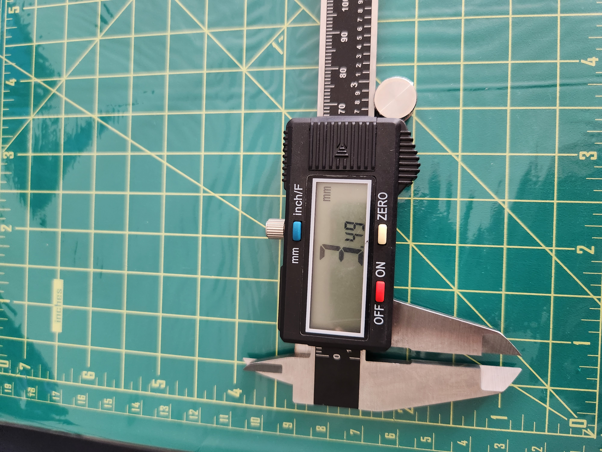
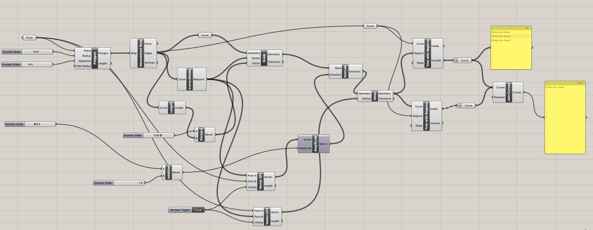
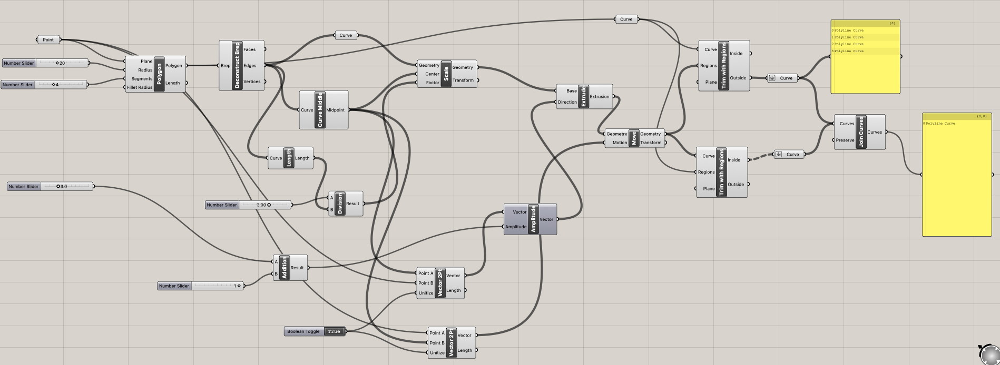
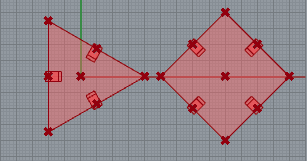
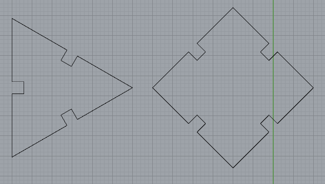
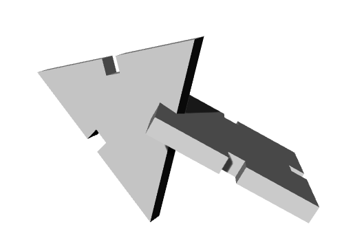

Assignment 2: Parametric Modelling with Grasshopper
Here is my finished and assembled kit. I created a pine cone-looking models, one with just triangle pieces, and the other with just rectangle pieces.

Again for this assignment, I followed our TA's tutorial on Rhino and Grasshopper to create the triangular shape and the rectangular shape.
While doing this, I also made sure to measure the exact thickness of the cardboard. It was 3.49mm, but I decided to make it 3mm in Grasshopper because the laser cut makes the gap a little bit bigger than the exact measurement.
NOTE: Zoom in or open up the grasshopper file to see the image in detail.
For my triangle, radius was 20mm, and the gap was 3mm.
Similarly for my rectangle, raidus was 20mm, and the gap was 3mm.
Once trimmed and cut, I ended up with the shapes below
 Here's what it looked like rendered.
When the two pieces were ready to be cut, I went over to the Mill, exported the file to illustrator, set the speed to 25, power to 100, and freq to 10. This took couple of trials because I realized some parts of the cardboard was thicker than other because they were squished from moving and the boxes were stacked on top of each other. Side panels were thicker than the top and bottom panels.
Source files
- A2 Grasshopper file
- A2 Main rhino file
- A2 rhino for illustrator export
- Illustrator file used to laser cut
Acknowledgement--thanks everyone!
- Junchao Yang's tutorial video on Grasshopper
- Mill staff who was on shift on 10/16/22 to help me jog my memory on laser cutting process.